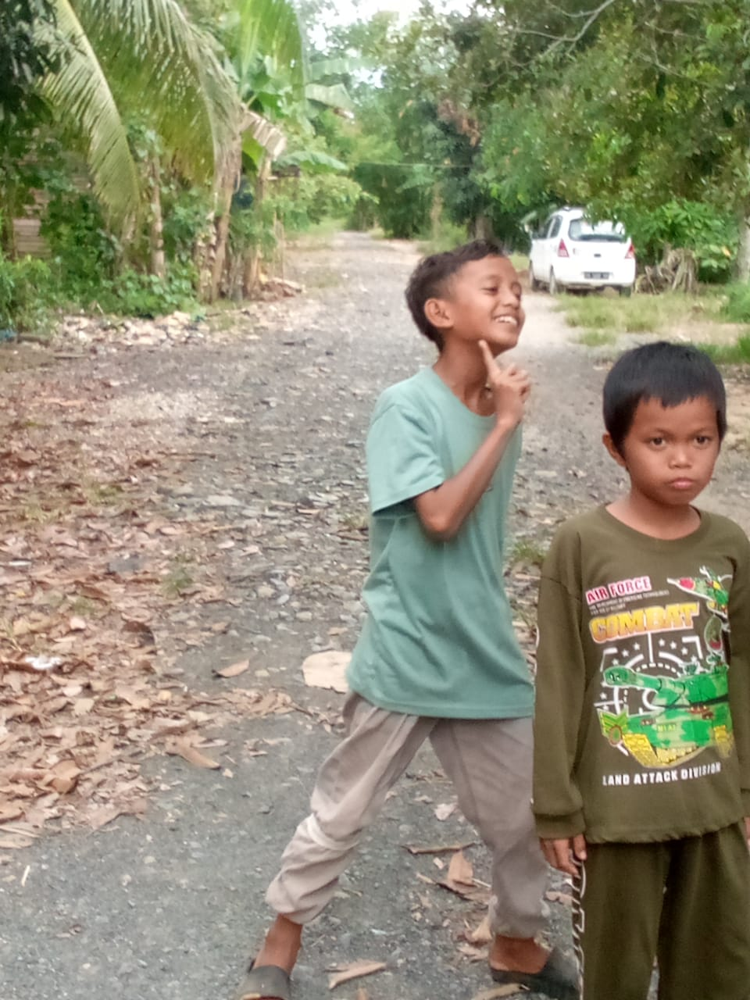
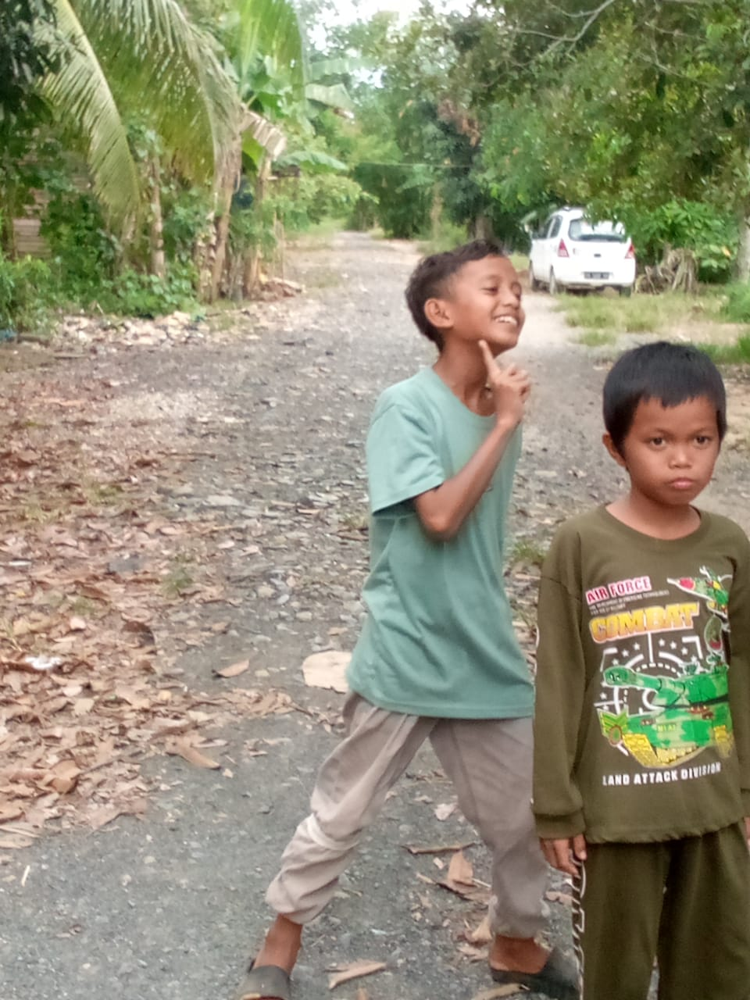
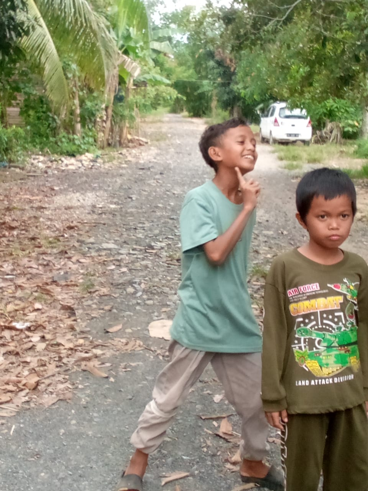

Foto Kenangan

 

Kenangan dan Informasi Sekolah

| No | Nama | Mapel |
|---|---|---|
| 1 | Bapak Rajali | Matematika |
| 2 | Ibu Fitria | Bahasa Indonesia |
| 3 | Bapak Mardi | Bahasa Arab |
| 4 | Bapak Musta'in | Akidah Akhlak/Al-Qur'an Hadist |
| 5 | Ibu Erma | Bahasa Inggris(1)/IPA/IPS |
| 6 | Ibu Halimah | Fikih/Tartil/Tahfiz |
| No | Nama | Kelas |
|---|---|---|
| 1 | Ahmad Anshari | VIII |
| 2 | Hafizah 🥶🥶 | VIII |